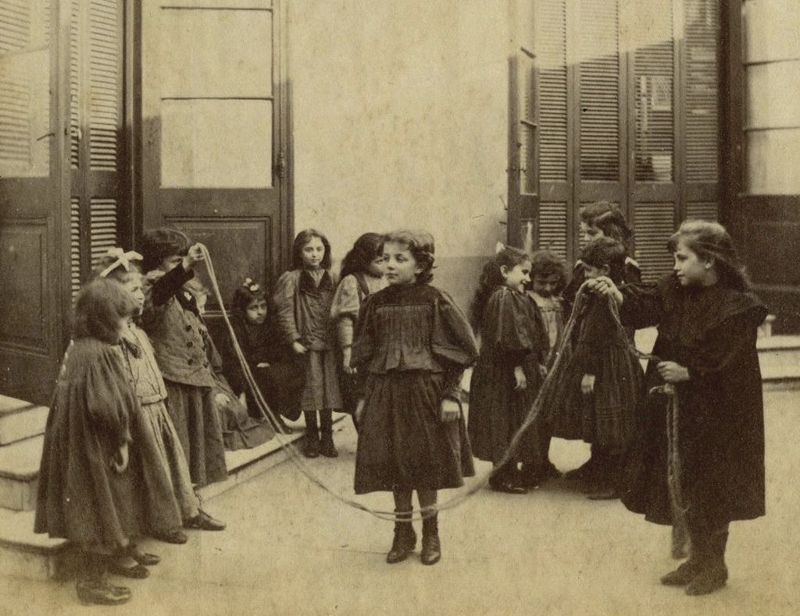
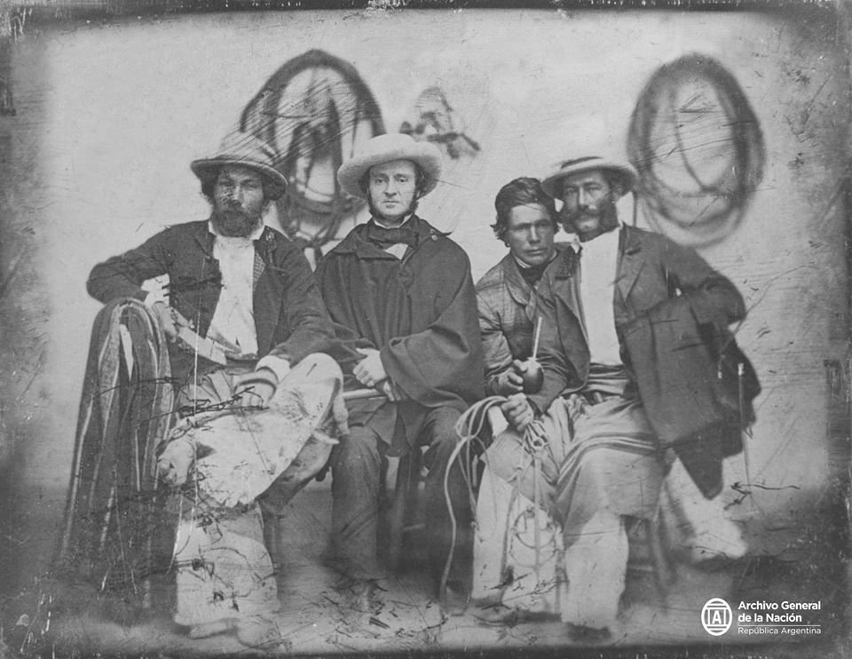
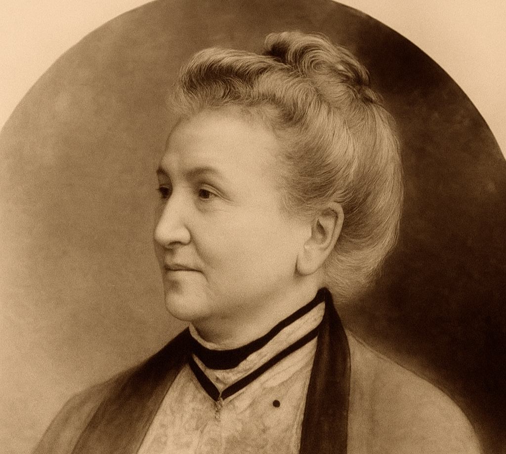

Fundada en 1891 por mujeres irlandesas para proteger y educar a los huérfanos de la inmigración

Orígenes y desafíos de una comunidad que encontró refugio en América del Sur
A mediados del siglo XIX, Argentina recibió a los primeros inmigrantes irlandeses que huían de la persecución religiosa contra los católicos y de la pobreza extrema en su tierra natal. Estos inmigrantes encontraron en nuestro país un refugio generoso donde comenzar una nueva vida.

La mayoría de estos inmigrantes se establecieron en zonas rurales, ya que su origen campesino los preparaba para trabajar como pastores, peones y mayordomos en las vastas estancias de la pampa argentina.
Con el paso de los años, gracias a su honestidad y trabajo duro, la comunidad irlandesa prosperó y creció, integrando sus tradiciones a la cultura argentina mientras mantenían su fe católica como elemento identitario.
A fines del siglo XIX, durante la presidencia de Juárez Celman, llegó a bordo del vapor "City of Dresden" el 8 de febrero de 1889, una nueva oleada de aproximadamente 1,000 familias irlandesas que escapaban de una feroz hambruna en Irlanda.
Lamentablemente, los preparativos para recibir adecuadamente a tan numeroso grupo de inmigrantes fallaron. Muchos de ellos, sin dinero, sin trabajo y sin hablar el idioma, enfrentaron situaciones extremadamente difíciles.
"La tragedia fue que muchos de estos inmigrantes murieron debido a las penurias, dejando atrás a numerosos huérfanos que se encontraron solos y desamparados en un país extranjero."
La respuesta solidaria de las mujeres irlandesas

Fundadora y líder de la Asociación
Ante la trágica situación de los huérfanos irlandeses, las esposas e hijas de los irlandeses ya establecidos en Argentina se unieron formalmente en 1891 para crear la Asociación de Señoras de San José.
Esta iniciativa fue liderada por Marion Murphy de Mulhall, una mujer de gran fortaleza y compromiso social, cuya visión y determinación fueron fundamentales para la creación y consolidación de la organización.
"La Asociación de Señoras de San José apoya y acompaña el desarrollo integral de la persona, promoviendo los valores cristianos y propiciando una formación que facilite su inserción laboral."
Estas pioneras trabajaron incansablemente para:
La labor de la Asociación fue tan significativa que en 1897 obtuvo la personería jurídica, reconociendo formalmente su importante labor social y humanitaria.
Esta formalización permitió a la organización expandir sus actividades y recibir apoyo de la comunidad en general.
Más de un siglo de compromiso con la educación y la comunidad
Fundación de la Asociación de Señoras de San José por Marion Murphy de Mulhall y otras mujeres irlandesas para ayudar a los huérfanos de la inmigración.
La Asociación obtiene su personería jurídica, reconociendo formalmente su labor social y humanitaria.
Expansión de las actividades de la Asociación, estableciendo hogares para niños y programas educativos en Buenos Aires y zonas rurales.
Fundación del Instituto Fahy en Moreno, Provincia de Buenos Aires, como culminación del proyecto educativo de la Asociación.
Consolidación del Instituto Fahy como institución educativa de referencia, incorporando orientación agropecuaria según las necesidades de la región.
La Asociación continúa siendo la entidad propietaria del Instituto Fahy, manteniendo vivo el legado de sus fundadoras y adaptándose a los nuevos desafíos educativos.
La continuidad de una obra centenaria
Fundado en 1927 en Moreno, Provincia de Buenos Aires, el Instituto Fahy es la máxima expresión del legado educativo de la Asociación.
La institución mantiene su orientación agropecuaria y continúa formando generaciones de estudiantes con los valores de esfuerzo, honestidad y compromiso social que inspiraron a sus fundadoras.
La Asociación de Señoras de San José sigue siendo hoy la entidad propietaria y fundadora del Instituto Fahy, manteniendo vivo el espíritu de sus pioneras.
Las sucesivas generaciones de mujeres que han dirigido la Asociación han preservado los valores originales mientras adaptaban la institución a los desafíos educativos contemporáneos.